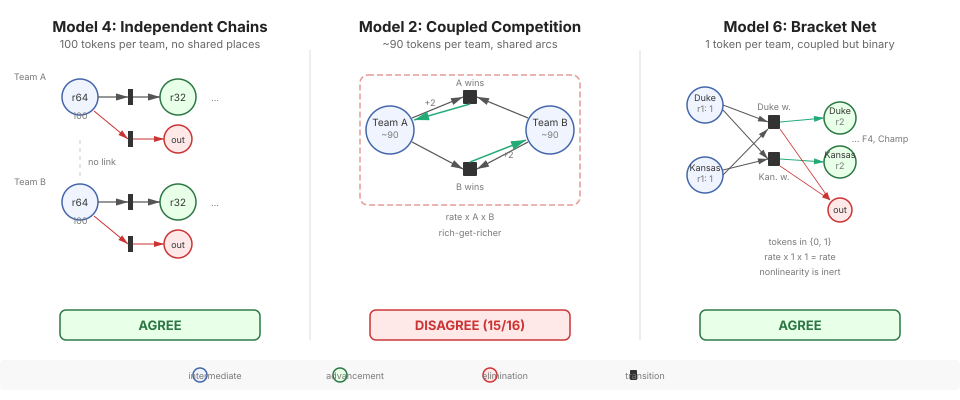
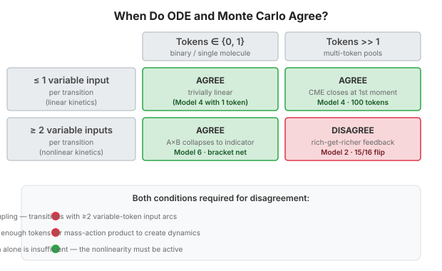
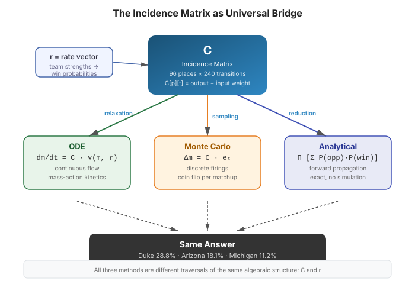
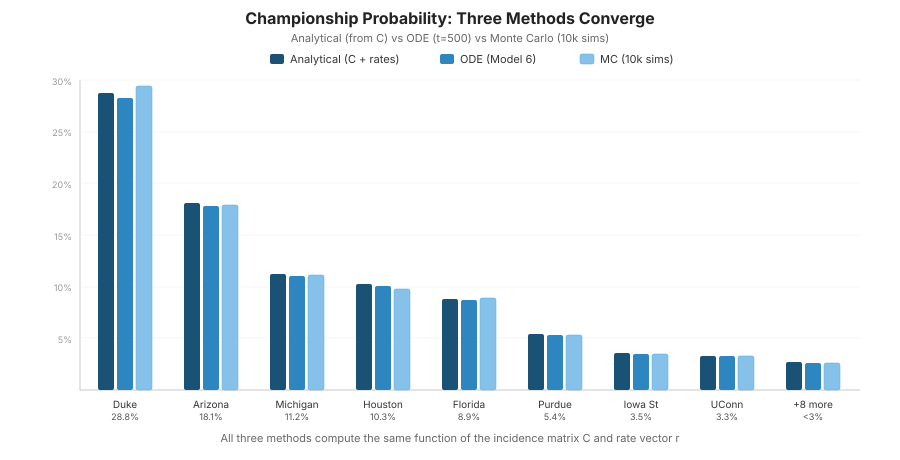

Championship Probabilities
16 teams, 4 rounds, 240 transitions. Three independent methods — ODE simulation, Monte Carlo sampling, and closed-form analytical propagation — all compute the same probabilities from the incidence matrix C.
| Team | Seed | Analytical | ODE | MC (10k) |
|---|---|---|---|---|
| Duke | 1 | 28.76% | 28.32% | 29.4% |
| Arizona | 1 | 18.13% | 17.86% | 17.9% |
| Michigan | 1 | 11.21% | 11.04% | 11.1% |
| Houston | 2 | 10.25% | 10.09% | 9.8% |
| Florida | 1 | 8.86% | 8.73% | 8.9% |
| Purdue | 2 | 5.39% | 5.31% | 5.3% |
| Iowa State | 2 | 3.56% | 3.50% | 3.5% |
| UConn | 2 | 3.33% | 3.28% | 3.3% |
| Illinois | 3 | 2.57% | 2.53% | 2.5% |
| Gonzaga | 3 | 2.16% | 2.13% | 2.2% |
| Michigan St | 3 | 1.52% | 1.50% | 1.5% |
| St John's | 5 | 1.36% | 1.34% | 1.3% |
| Virginia | 3 | 1.13% | 1.11% | 1.1% |
| Alabama | 4 | 0.95% | 0.93% | 0.9% |
| Kansas | 4 | 0.49% | 0.48% | 0.5% |
| Nebraska | 4 | 0.33% | 0.33% | 0.3% |
Three Nets, Two Methods
We built three Petri net models with different topologies. The surprise: coupled transitions don't cause ODE/MC disagreement. Binary tokens do.

When Do ODE and Monte Carlo Agree?
Two axes determine agreement: coupling (how many inputs per transition) and token count (binary vs multi-token). Only the bottom-right cell disagrees.

The Incidence Matrix as Bridge
The incidence matrix C defines all three methods. ODE flows probability mass through C continuously. MC routes tokens through C discretely. The analytical formula reads the answer directly from C.

Three Methods Converge
Championship probabilities from analytical (exact), ODE (asymptotic), and Monte Carlo (sampled) methods. All agree because they compute the same function of C.

Data Sources
Team strength metrics normalized to 0–100 scale from three sources:
- Barttorvik — Adjusted offensive/defensive efficiency, Barthag, SOS, WAB
- NCAA API — Win-loss records, conference records
- Sports-Reference — Minutes distribution, bench scoring, roster depth
Five facets: Offense (20%), Defense (25%), Record (20%), Momentum (20%), Depth (15%). Win probability via logistic function: P(A beats B) = 1 / (1 + exp(-0.15 * (str_A - str_B))).
Further Reading
- March Madness Without Monte Carlo — blog post with full analysis
- The Incidence Reduction — ODE equilibrium recovers integers from topology
- Earned Compression — three formalisms discover the same structural boundary
- Petri Net Viewer — browse the bracket net model